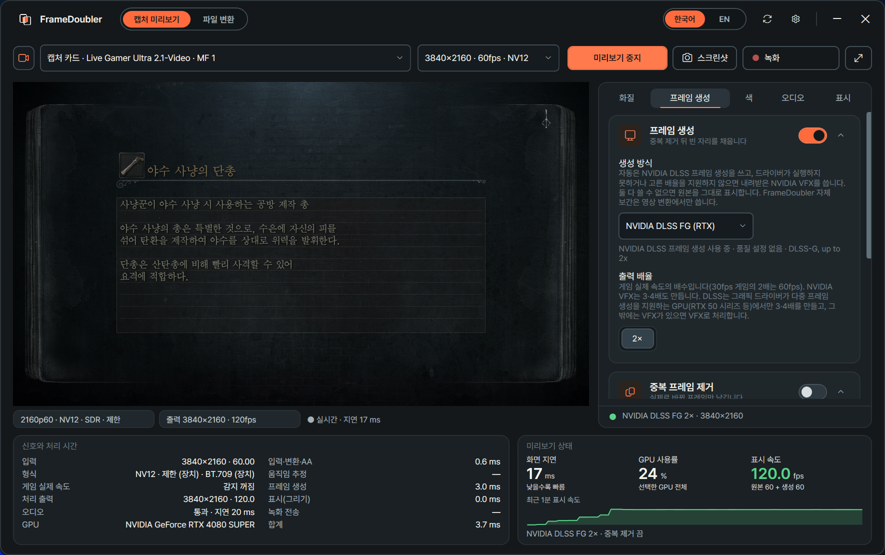
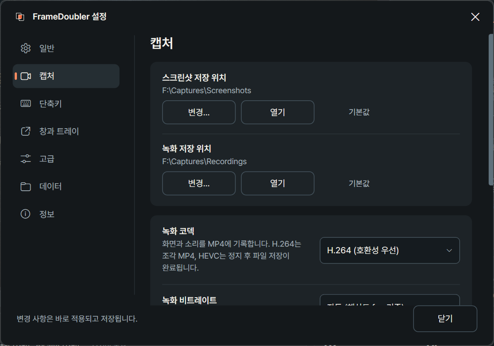
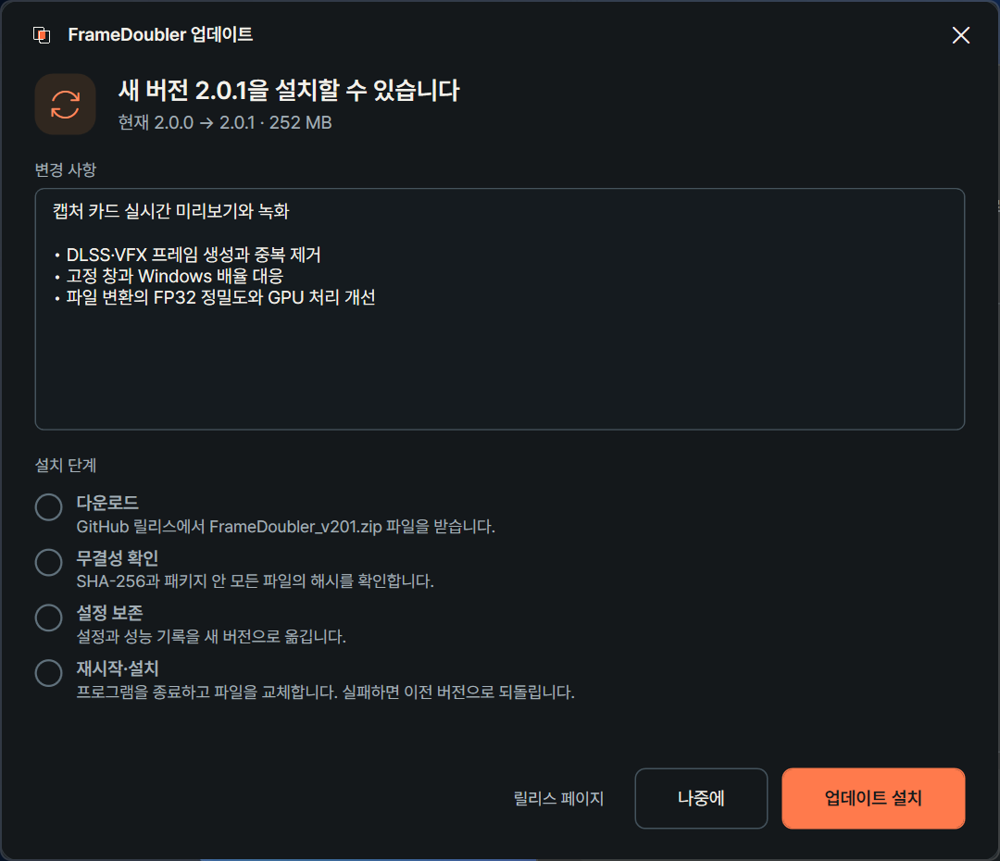

실시간 프레임 생성
자동은 DLSS FG를 먼저 쓰고, 실행할 수 없으면 설치된 VFX를 사용합니다. 기본은 2배이며 VFX는 3·4배도 지원합니다. DLSS 배율은 드라이버의 실제 지원 범위를 따릅니다.
캡처 미리보기와 게임 녹화 파일 변환
캡처 카드를 연결해 게임 화면을 실시간으로 보세요. DLSS·VFX 프레임 생성과 중복 제거를 적용합니다. 처리된 화면과 소리를 그대로 녹화할 수 있습니다. 녹화 파일은 RIFE로 부드럽게 변환합니다.
파이어엠블렘 만자천홍 4K 녹화의 같은 구간입니다. 차이가 잘 보이지 않으면 느리게 재생해 보세요. 실제 속도의 차이는 60Hz 이상의 화면에서 보입니다.
2.0.0 새 기능
캡처 미리보기를 기본 화면으로 제공합니다. 프레임 생성과 중복 제거는 필요할 때 켜고, 선택한 설정은 기억합니다. 기존 녹화 파일 변환은 제목 표시줄에서 바로 전환합니다.
자동은 DLSS FG를 먼저 쓰고, 실행할 수 없으면 설치된 VFX를 사용합니다. 기본은 2배이며 VFX는 3·4배도 지원합니다. DLSS 배율은 드라이버의 실제 지원 범위를 따릅니다.
Media Foundation과 DirectShow 입력을 지원합니다. 같은 이름의 카드는 장치 경로로 구분하고, 다른 장치로 잘못 대체하지 않습니다. NV12·YUY2·UYVY·RGB와 I420·YV12 SDR 입력을 처리합니다.
3초 카운트다운 뒤 처리 화면을 H.264·HEVC와 AAC MP4로 저장합니다. 하드웨어 인코더를 사용하고 영상은 일정한 프레임 간격으로 기록합니다. 원본 해상도 PNG 스크린샷도 지원합니다.
작업 영역과 Windows 배율에 맞춘 고정 창에 Pretendard 글꼴을 적용했습니다. 화면 지연, GPU 사용률, 실제 바뀐 프레임 수를 표시합니다. 미리보기를 더블클릭하면 전체 화면이 됩니다.
캡처 카드 소리를 화면 지연에 맞춰 재생하고, Windows 기본 출력 또는 지정한 장치를 사용합니다. VSync·출력 상한·화면 비율·원본 비교와 사용자 지정 단축키를 제공합니다.
두 RIFE 모델은 FP32 저장·연산을 사용하며 원본 해상도에서 보간합니다. GPU 입력 변환과 엔진 병렬 처리로 불필요한 비용을 줄이고, 선택형 RTX 가속도 설치할 수 있습니다.
파일 변환 · 중복 프레임
콘솔 게임이 30fps로 동작하면, 캡처 카드는 같은 화면을 두 번씩 받아 60fps 파일로 저장합니다. 파일 정보에는 60fps라고 표시되지만 실제 움직임은 30fps입니다. 유튜브에 올려도 60fps의 부드러움은 나오지 않습니다.
일반적인 보간 프로그램은 이 파일을 그대로 2배로 늘립니다. 그러면 똑같은 두 프레임 사이를 보간하게 되어 결과는 달라지지 않습니다. FrameDoubler는 먼저 중복을 걷어 내고 진짜 움직임만 남긴 뒤에 보간합니다.
 원본 · 움직임 30fps
FrameDoubler · 움직임 60fps
원본 · 움직임 30fps
FrameDoubler · 움직임 60fps
파일 변환 · 작동 방식
영상의 해상도, 코덱, 프레임레이트, 비트 심도, 색상 정보를 읽습니다. 이 PC에서 실제로 동작하는 GPU와 인코더를 시험하여 고릅니다.
프레임을 서로 비교하여 파일의 fps와 실제 움직임의 fps를 구별합니다. 60fps 파일 속의 30fps 움직임을 찾아냅니다.
압축 때문에 조금씩 달라진 중복 프레임도 판정합니다. 프레임 드롭으로 3번, 4번 반복된 구간과 정지 화면도 구분합니다.
남은 프레임 사이의 정확한 시각에 새 프레임을 만듭니다. ncnn과 Vulkan으로 제조사와 관계없이 GPU에서 실행합니다. 장면이 바뀌는 순간에는 두 화면을 섞지 않습니다.
NVENC, AMF, QSV, 소프트웨어 인코더 가운데 동작하는 것을 고릅니다. 선택한 프리셋에 따라 원본 화질을 유지하거나 YouTube 권장 설정으로 만들고, 길이와 오디오 싱크를 지킵니다.
처음·중간·끝 각 1분만 검사합니다(최대 3분, 겹침 병합). 전체 메타데이터도 확인하지만 검사 밖의 오류는 놓칠 수 있습니다.
RIFE 파일 변환 측정 결과
추정한 실제 움직임입니다. 파일은 60fps지만 움직임은 30fps였습니다.
새로 만든 사이의 프레임입니다. 전체 1,283프레임 가운데 중복 자리를 채웠습니다.
변환 뒤에 남은 움직임 중복의 비율입니다. 검증 기준(1%)을 통과했습니다.
원본과의 영상 길이 차이입니다. 오디오 동기의 변화도 최대 6.83ms였습니다.
파이어엠블렘 만자천홍을 3840×2160, 60fps로 약 21초 녹화한 샘플의 결과입니다. 개발 기준 PC에서 변환하고 검증했습니다. 영상의 내용과 장치에 따라 결과와 처리 속도는 달라집니다.
녹화 파일 변환 기능
코덱, 비트레이트, 길이와 함께 파일의 fps와 추정한 움직임 fps를 나란히 보여 줍니다. 1~2시간 녹화도 여러 구간만 읽어 바로 분석합니다.
프레임 드롭으로 생긴 반복과 일시 정지 메뉴 같은 정지 화면을 구별합니다.
컷이 바뀌는 순간에는 보간하지 않습니다. 두 장면이 겹쳐 보이는 프레임이 생기지 않습니다.
NVIDIA, AMD, Intel의 Vulkan GPU를 지원 대상으로 합니다. GPU를 쓸 수 없으면 CPU로 처리하고 느려진다고 알려 줍니다.
NVENC, AMF, QSV와 소프트웨어 인코더로 짧게 인코딩해 봅니다. 성공한 인코더만 고르며, 설정에는 NVENC (GPU)·CPU처럼 쉽게 표시합니다.
원본 비트레이트를 유지하거나 fps에 비례해 늘리는 원본 프리셋, YouTube 4K(45Mbps)·1080p(10Mbps) 프리셋을 고릅니다. 원본 프리셋은 오디오를 그대로 넘깁니다.
영상 길이를 프레임 단위로 맞춥니다. 오디오의 시작 시각과 색상 정보도 원본 그대로 유지합니다. HDR 영상은 SDR로 변환합니다.
미니맵이나 자막처럼 움직이지 않는 영역을 지정할 수 있습니다. 그 영역의 화소는 원본 그대로 유지합니다.
장치 실측과 완료 작업을 반영해 하나의 예상 소요 시간과 완료 예정 시각을 알려 줍니다. 추정 범위는 도움말에서 확인합니다.
여러 영상을 썸네일과 함께 보여 주고, 끌어서 순서를 바꾸며, 전체나 고른 영상만 번호순으로 변환합니다. 함께 들어 있는 명령줄 도구로 폴더 전체를 처리할 수도 있습니다.
설정(settings.ini)과 기록은 실행 파일이 있는 폴더에 저장합니다. 업데이트는 모든 파일의 해시를 확인하고, 프로그램이 종료된 뒤 설치 창에서 교체하며, 실패하면 이전 버전으로 되돌립니다.
최소화는 기본으로 작업 표시줄에 남고, 설정에서 트레이로 바꿀 수 있습니다. 중복 실행은 기존 창을 엽니다. 화면과 트레이 메뉴는 한국어·영어를 지원합니다.
실제 화면
실제 캡처 카드 입력을 띄운 FrameDoubler 화면입니다. 미리보기 옆에서 프레임 생성·화질·색·오디오·표시를 조절합니다. 하단에서 지연과 GPU 사용률, 표시 속도를 확인합니다.




다운로드
FrameDoubler 폴더는 통째로 유지합니다(약 536MB).FrameDoubler.exe를 실행하고 캡처 장치와 모드를 확인합니다.실행에 필요한 .NET·RIFE 모델·FFmpeg·DLSS 라이브러리가 포함됩니다. VFX와 파일 변환용 RTX 가속은 라이선스 동의 후 선택 설치합니다.
Get-FileHash FrameDoubler_v200.zip -Algorithm SHA256
SHA-256 값은 릴리스 페이지의 설명에서 확인합니다.